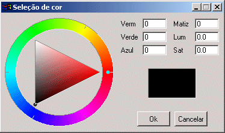

Shows a modal dialog which allows the user to select a color.
This dialog is included in the Controls Library. It requires an addicional initialization, see the Controls Library documentation.
int IupGetColor(int x, int y, unsigned char *r, unsigned char *g, unsigned char *b); [in C] iup.GetColor(x, y, r, g, b: number) -> (r, g, b: number) [in Lua]
x, y: x, y values of the IupPopup function.
r, g, b: Pointers to variables that will receive the color selected by the user if the OK button is pressed. The value in the variables at the moment the function is called defines the color being selected when the dialog is shown. If the OK button is not pressed, the r, g and b values are not changed. These values cannot be NULL.
The function returns 1 if the OK button is pressed, or 0 otherwise.
In systems with few colors available (256), this function will show the colors by automatically performing dithering, providing good results. However, if only a few colors are available at the system’s palette, strange artifacts may appear.
The dialog uses a global attribute called "PARENTDIALOG" as the parent dialog if it is defined. It also uses a global attribute called "ICON" as the dialog icon if it is defined.
